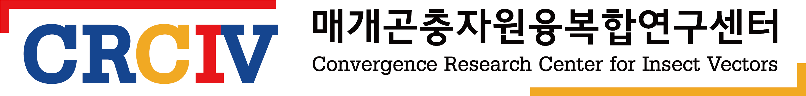

매개곤충자원융복합연구센터
Home
About us
People
Research
Education
Publications
Events
Contact

뉴스
CRCIV 관련 새 소식입니다.
환영해요! 올가 박사님!
농진청에서 좋은 연구를 해오셨던 올가 박사님께서 매개곤충자원융복합연구센터에 합류하셨습니다.
Jan 15, 2023
김병주
홈페이지 리뉴얼
안녕하세요, 2023년 계묘년을 맞이하여, 홈페이지가 리뉴얼되었습니다.
Jan 14, 2023
김병주
No matching items
이벤트
CRCIV 에서 진행하는 각종 이벤트를 공시합니다.
마에스트로 강의 part #3
김병주
Jan 15, 2023
No matching items